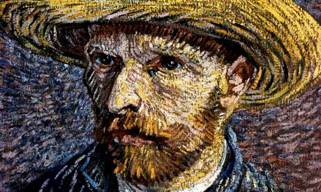

German Culture
Arts and Music
Germany boasts a rich and influential artistic and musical heritage. From the medieval era onwards, German artists and musicians have made significant contributions to the world's cultural landscape. Renowned composers like Bach, Beethoven, and Brahms revolutionized classical music, while figures like Goethe and Schiller elevated German literature. In the visual arts, Germany has produced masters such as Albrecht Dürer and Hans Holbein the Younger. Today, Germany continues to be a vibrant hub for contemporary art, music, and theater, with numerous world-class museums, opera houses, and concert halls.
Festivals and Traditions
:max_bytes(150000):strip_icc()/GettyImages-455855694-resize-58b5a0d73df78cdcd87c5a17.jpg)
Germany boasts a rich tapestry of festivals and traditions that reflect its cultural heritage. From the vibrant and colorful celebrations of Carnival (Fasching or Karneval) to the iconic Oktoberfest, there's always something to celebrate. Christmas markets, with their enchanting atmosphere and festive spirit, are a beloved tradition, while Easter customs like decorating eggs and hiding them for children to find are also cherished. These festivals and traditions offer a glimpse into the heart of German culture, showcasing its warmth, joy, and sense of community.
Values and Lifestyle

German culture is characterized by a strong emphasis on order, efficiency, and punctuality. Germans value hard work, education, and social responsibility. They often prioritize family and community, and have a deep appreciation for tradition and history. While they may appear reserved at first, Germans are known for their directness and honesty. They also have a strong sense of environmental consciousness and social justice.
Customs and Social Norms

German customs and social norms reflect a blend of tradition and modernity. Punctuality is highly valued, and it's considered polite to arrive on time for appointments and social gatherings. Germans tend to be direct and honest in their communication, even if it may sometimes be perceived as blunt. While public displays of affection are generally reserved, shaking hands is a common greeting. In social settings, it's customary to bring a small gift, such as flowers or chocolates, when visiting someone's home. Additionally, Germans often prefer to have a structured and organized approach to social interactions, which helps to foster a sense of predictability and reliability.